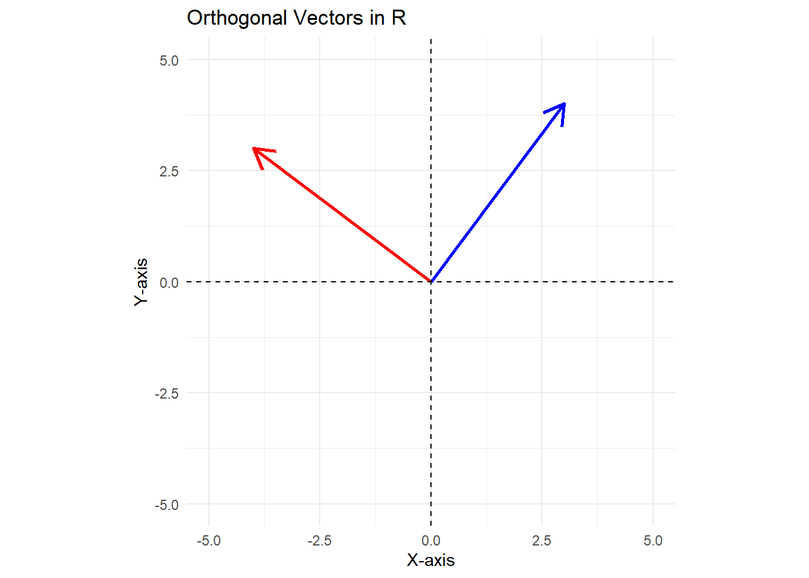

This module extends our discussion of orthogonality.
Orthogonality serves as the geometric bedrock of linear regression, providing a rigorous mathematical framework for the concept of “unrelatedness” between variables. At its simplest level, orthogonality is defined by a zero dot product between two vectors, indicating that they are perpendicular and share no common components in a vector space.
In the context of least squares, this principle allows us to decompose the dependent variable \(\boldsymbol{y}\) into two perfectly independent parts: the projection, \(\boldsymbol{\hat{y}}\), which represents the information captured by the model, and the residual vector \(\boldsymbol{e}\), which represents the remaining noise. By ensuring that the residuals are orthogonal to the column space of the regressors, the least squares estimator effectively “annihilates” all linear information contained in the independent variables from the error term, resulting in a unique, global minimum where the predicted signal and the unexplained noise are completely uncorrelated.
10.2 Dot Product
The dot product or inner product or scalar product is a way to multiply two vectors to get a scalar. The dot product measures how much the two vectors are aligned.
Given two vectors, a and b, where \(a = (a_1, a_2, \dots, a_n)\) and \(b = (b_1, b_2, \dots, b_n)\), the dot product of a and b is equal to:
\[
a \cdot b = a_1 b_1 + a_2 b_2 + a_3 b3 + \dots + a_n b_n
\]
10.3 Orthogonality
If two vectors are orthogonal, then the two vectors are perpendicular to each other.
Let \(\theta\) be the angle between vectors a and b. The dot product of the two vectors is
\[
a \cdot b = |a| |b| cos(\theta)
\]
If the two vectors are orthogonal, then the angle between the vectors is 90 degrees.
The cosine of 90 degrees is equal to 0, thus the dot product between the two vectors is equal to 0. This means that the two vectors have no component in the same direction.
10.4 Orthogonal Example
Assume that we have two vectors,
\[
a = (3,4) \quad \quad b = (6,8)
\]
The dot product between a and b is equal to:
\[
a \cdot b = (3 \times 6) + (4 \times 8) = 18 + 32 = 50
\]
In this example, the two vectors are not orthogonal to each other.
Assume we have two vectors,
\[
a = (3,4) \quad \quad c = (-4,3)
\]
The dot product between a and c is equal to:
\[
a \cdot c = (3 \times -4) + (4 \times 3) = -12 + 12 = 0
\]
In this example, a and c are orthogonal as their dot product is equal to 0.
In the code example below, we show that
\[
a \cdot b = 50 \\
a \cdot c = 0 \\
b \cdot c = 0
\]
# Define vectorsvector1 <-c(3, 4)vector2 <-c(6, 8) vector3 <-c(-4,3) # Check whether dot product is equal to 0dot_prod_12 <- vector1 %*% vector2dot_prod_13 <- vector1 %*% vector3dot_prod_23 <- vector2 %*% vector3# Create a data frame for plottingdf <-tibble(x =c(0, 0), y =c(0, 0), xend =c(vector1[1], vector3[1]), yend =c(vector1[2], vector3[2]))# Plot the vectorsggplot() +geom_segment(data = df, aes(x = x, y = y, xend = xend, yend = yend),arrow =arrow(length =unit(0.2, "inches")),color =c("blue", "red"), linewidth =1) +xlim(-5, 5) +ylim(-5, 5) +coord_fixed() +theme_minimal() +ggtitle("Orthogonal Vectors in R") +xlab("X-axis") +ylab("Y-axis") +geom_hline(yintercept =0, linetype ="dashed") +geom_vline(xintercept =0, linetype ="dashed")

10.5 Least Squares
Given the assumptions of linearity, full rank, and zero conditional mean, the least squares estimator is equal to:
\[
b = (X^T X)^{-1} X^T y
\]
The predicted (fitted) values, \(\boldsymbol{\hat{y}}\) are equal to
\[
\boldsymbol{\hat{y} = Xb}
\]
The residuals are thus equal to
\[
e = y - \hat{y} = y - Xb = y - X(X^TX)^{-1}X^Ty = My
\]
We know that M and P are orthogonal, so it stands to reason that My and Py are orthogonal, or
\[
(My)^T Py = 0
\]
\[
(My)^T Py = ((I - P)y)^T Py = y^T(I-P)Py
\]
Recalling that I and P are square, symmetric, and idempotent yields
Thus, we have demonstrated that My and Py are orthogonal.
We can demonstrate this below using R.
Here we use the mtcars example data to create a y vector containing mpg and a matrix of independent variables where the first column is a column of 1’s.
We estimate b and Xb to obtain e and then illustrate the dot product of \(e^T\) and \(\hat{y}\) is approximately 0.
We then turn to the question of whether \(\boldsymbol{e}\) is orthogonal to each individual regressor, that is, does zero conditional mean hold? The answer is yes, the residuals are orthogonal to the regressors.
rm(list =ls())data(mtcars)y <-as.matrix(mtcars$mpg)x <-as.matrix(tibble(x1 =rep(1,32),cyl = mtcars$cyl,hp = mtcars$hp,wt = mtcars$wt))I <-diag(32)P <- x %*%solve(t(x) %*% x) %*%t(x)M <- (I - P)bhat <-solve(t(x) %*% x) %*%t(x) %*% ye <- M %*% yyhat <- x %*% bhatdot_e_yhat <-t(e) %*% yhatorth_e_cyl <-t(e) %*% x[,"cyl"]orth_e_hp <-t(e) %*% x[,"hp"]orth_e_wt <-t(e) %*% x[,"wt"]df <-tibble(round(dot_e_yhat, 3),round(orth_e_cyl,3),round(orth_e_hp,3),round(orth_e_wt,3))kable(df,col.names =c('Dot Product of Yhat and e','Dot Product of e and Cylinder Variable','Dot Product of e and HP Variable','Dot Product of e and Weight Variable'),align ='c') %>%kable_styling()